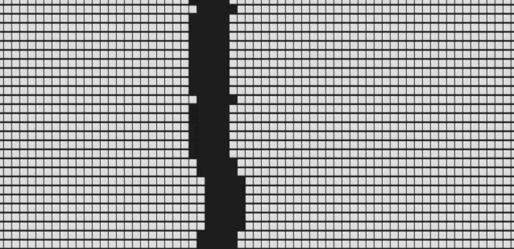

14. Глубокая пещера.
Условие:
Программа представляет собой динамическое изображение глубокой пещеры, ведущей до самого центра Земли.
Программа активно использует тот факт, что при выводе на экран новых строк старые передвигаются вверх.
Благодаря этому у зрителя создается впечатление, что изображение на экране движется вниз.
Пример программы:

Код:
import random, sys, time, bext
WIDTH = 70
PAUSE_AMOUNT = 0.05
bext.clear()
print('Нажмите Ctrl-C для остановки.')
time.sleep(2)
leftWidth = 20
gapWidth = 10
while True:
rightWidth = WIDTH - gapWidth - leftWidth
print(('⬜' * leftWidth) + (' ' * gapWidth) + ('⬜' * rightWidth))
try:
time.sleep(PAUSE_AMOUNT)
except KeyboardInterrupt:
sys.exit()
diceRoll = random.randint(1, 6)
if diceRoll == 1 and leftWidth > 2:
leftWidth = leftWidth - 1
elif diceRoll == 2 and leftWidth + gapWidth < WIDTH - 2:
leftWidth = leftWidth + 1